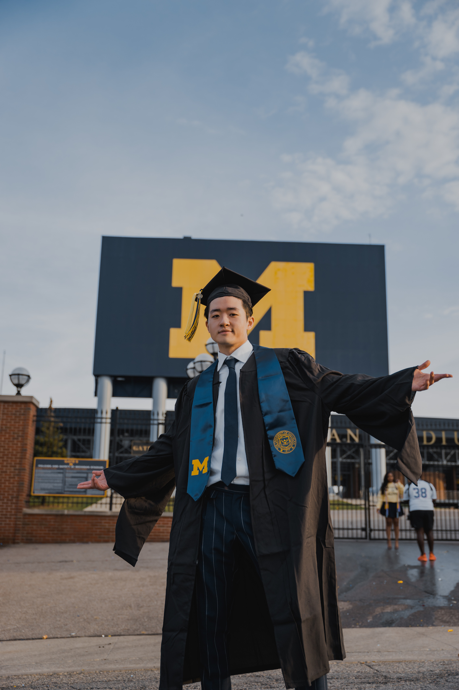

University of Michigan Gradautation Photo 1
University of Michigan Gradautation Photo 2

University of Michigan Gradautation Photo 3
 University of Michigan Gradautation Photo 4
University of Michigan Gradautation Photo 4
 Penn State University Gradautation Photo 1
Penn State University Gradautation Photo 1
Penn State University Gradautation Photo 2
Penn State University Gradautation Photo 3
 Penn State University Gradautation Photo 4
Penn State University Gradautation Photo 4